From the sea to your table.
Seafood, steaks and Costa Rican cooking in Quepos. Open every day from noon to 11 pm.
From our kitchen
Whole fish, jumbo shrimp and steaks. Here are some of the dishes on our menu.
Full menu-
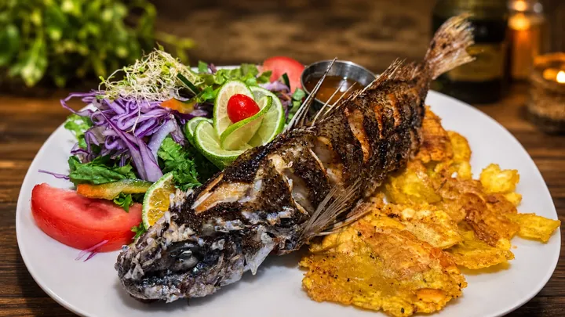
Whole Fish
Served with salad and patacones (fried plantain). Priced by weight.
-
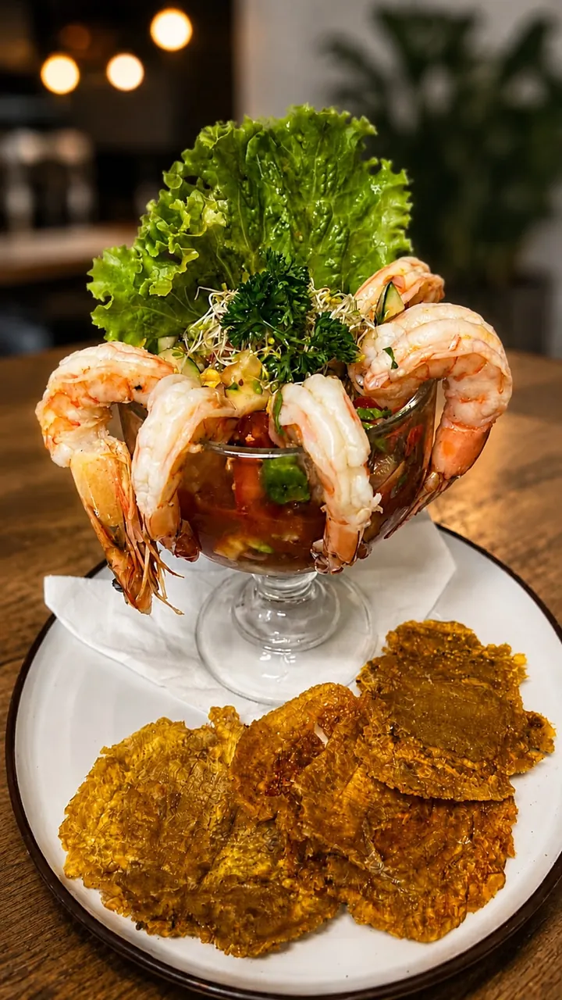
Shrimp Cocktail
Jumbo shrimp, cocktail sauce, avocado, cucumber and tomato, with fried plantain.
-
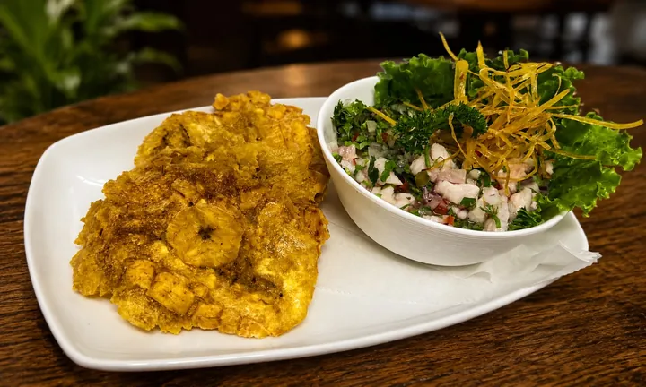
Fish Ceviche
Marinated in lime with red onion, sweet pepper and cilantro, with fried plantain.
-
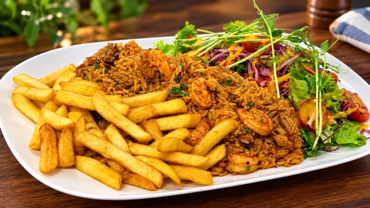
AzuMar Rice
Shrimp and beef tenderloin, served with French fries and salad.
-
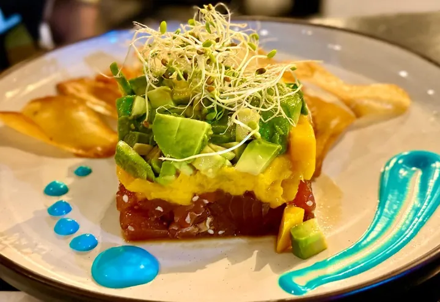
Tuna Tartare
Served with mango, avocado and cassava chips.
-
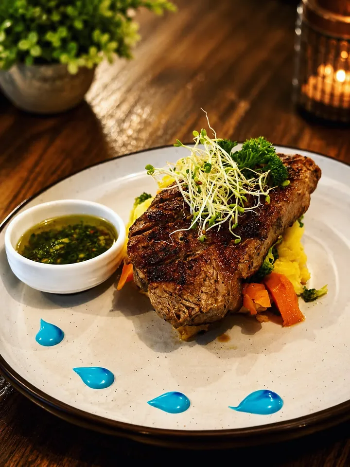
Churrasco Steak
With Argentine chimichurri, served with mashed potatoes and vegetables.
-
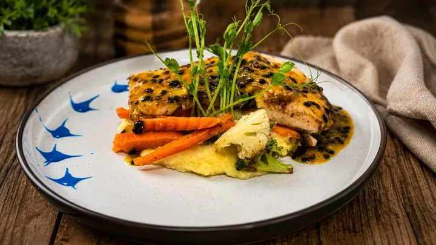
Fish Fillet
With garlic or passion fruit sauce, served with mashed potatoes and vegetables.
-
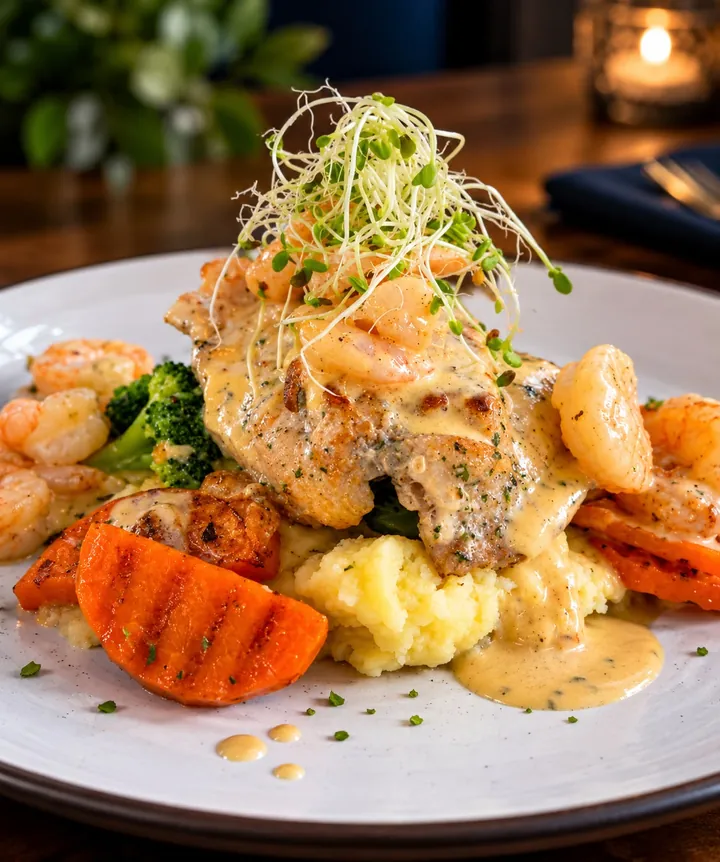
Fish Fillet with Shrimp Sauce
Served with mashed potatoes and vegetables.
-
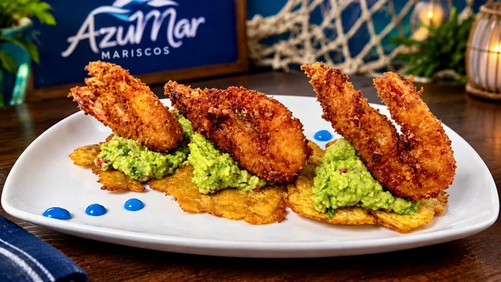
Shrimp with Plantain and Guacamole
Shrimp on a bed of guacamole and fried plantain.
-
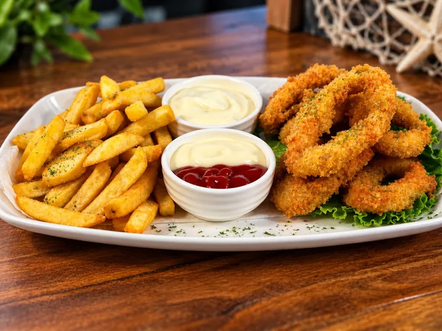
AzuMar Calamari Rings
Breaded calamari rings, served with French fries.
-
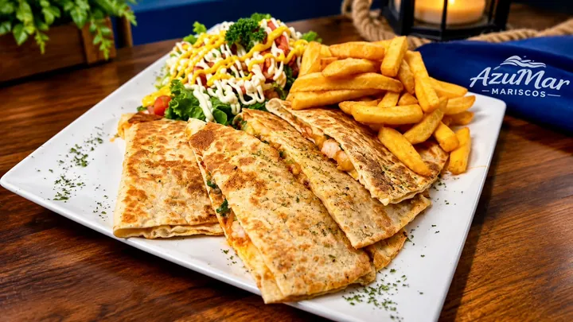
Shrimp Quesadilla
Flour tortilla with sautéed shrimp and mozzarella, with fries and salad.
The Shrimp Cocktail, up close
Jumbo shrimp in a glass with cocktail sauce, avocado, cucumber and tomato. Served with patacones, our fried plantain.
Order deliveryAzuMar at home
Order your favorite dishes from your phone and we’ll bring them to your door.
-
Choose
Tap the dishes you want on the order page and see the total right away.
-
Send
Add your name and address, and your order reaches us directly on WhatsApp.
-
Pay
By SINPE Móvil to 8775-8360, under the name Yohis Hernández B.
Come see us in Quepos
Hours
Noon to 11 pm
Open every day of the week.
Address
La Inmaculada, Quepos
Across from the main entrance, Puntarenas.
Get directions (opens in a new tab)WhatsApp and phone
+506 8775-8360
Orders and questions.